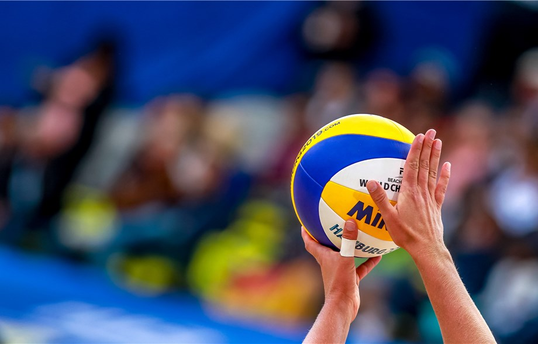
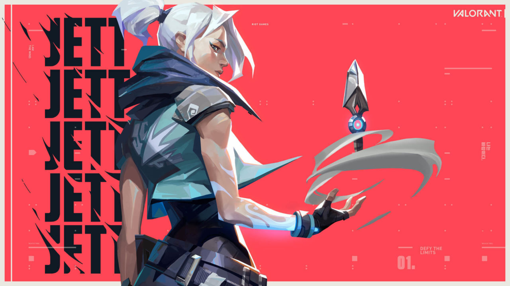
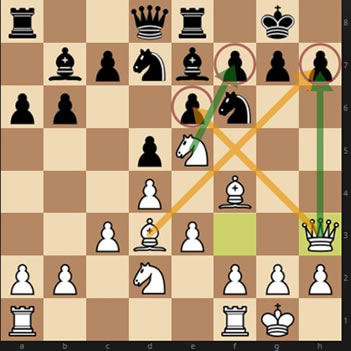
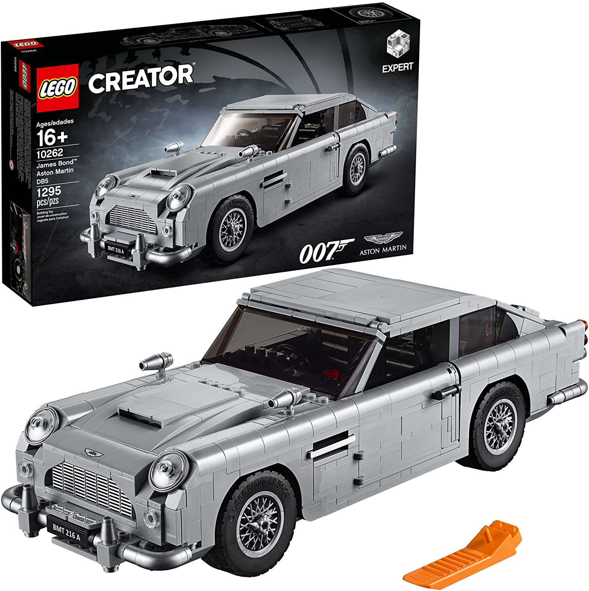

Quite possibly my favorite past time at IIT before COVID shut most of the school events down was intramural volleyball with my fraternity at Keating. Were we very good? No, but it was super fun to play valleyball weekly against other orgs and teams. Personally, I enjoyed serving the most and, despite my height, sucked at blocking.
Once the pandemic declines, I hope I can go back to playing volleyball again with my friends, and I hope to continue playing after school for fun as well.
A huge part of my life recently, since it's both winter and COVID season, and going outside is less than optimal, has been playing a lot of online games. Currently my go-to games are Valorant, Skyrim, and League of Legends, which I play for one of IIT's esports teams.
Recently, I have also been getting back into playing chess. While I was probably at my best around 8th grade, when I played in my schools chess club, I am trying to get back to, and pass where I was then. I like to play in person, but due to COVID I've been playing online against people from around the world. While I only rate at about ~1200 right now, My goal is to reach a rating of about 2000 at some point!
As a kid, Legos were a huge part of my life, I loved to build massive sets. While I don't have many anymore, I still like to collect architecture sets from places I've been, and I want to build the Lego Aston Martin from the original James Bond films.
